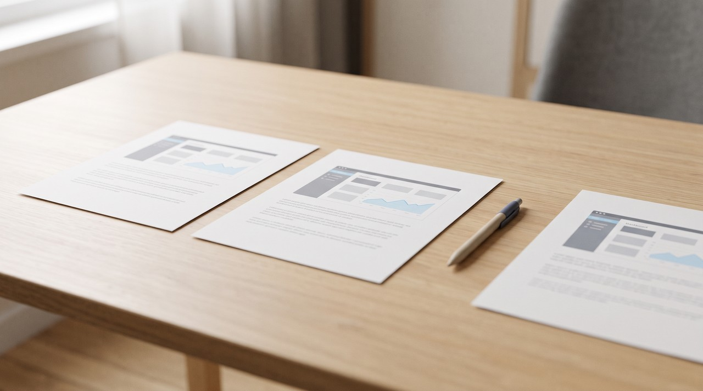

How to turn a Loom video into text without losing what was on the screen
Every Loom plan gives you a transcript. Open the Transcript tab beside the player and click the copy button to get the spoken words. To keep what was on the screen as well, you need the .mp4 file. The creator can download it for you, or they can turn on Allow downloads for signed-in viewers on a paid plan, and then you can turn that file into a document of words and screenshots right on your computer.
Someone sends you a Loom. Maybe it is a five minute walkthrough of a dashboard, a bug, or how to fill in a form. You want it as text so you can search it later or paste it into ChatGPT. Loom actually writes these words down for you. For the words alone, open the Transcript tab and press copy.
A Loom is a screen recording, and the screen is really the whole point. People talk differently when they point at things. The transcript fills up with lines like "then you click this one here" and "see how that number jumps". That number and that button only exist in the picture, so I will explain both parts here: how to get the words out of Loom, and how to get the screen out with them.
Does Loom make a transcript of every video?
You get a transcript on nearly every video. Loom's transcription help page says transcripts are available on all Loom plans and in more than 50 languages. You will see them in a Transcript panel beside the video. Each line has a timestamp, and clicking that time jumps the video straight to that moment, plus you get a copy button for the whole text and a search box to find single words.
A few videos do come without a transcript. Loom gives three reasons for this: the video might be very long, processing is still running, or someone recorded it before the feature existed. The creator can also go into the settings for that video and turn transcription off, and then you will not see captions either. This is usually why a Transcript tab is missing on a Loom someone sends you.
You can also get a file version. A caption file is called an .srt, and it is just the transcript with a start and end time on every line. You find it in the three dots menu above the video under Download captions. But this option only shows up for creators and admins on the Business or Business + AI plans, and members and admins on Enterprise, so on the free Starter plan you just have the copy button.
Who can download a Loom video?
People often get stuck here. The download button appears for some people and not for others on the exact same link. Loom has a download help page that sets all this out by plan and by role. Whenever a Loom does download, it comes as an .mp4 file.
| Who you are | Can you download it? | What to do |
|---|---|---|
| The creator, on the free Starter plan | No | Copy the transcript; the video stays in Loom |
| The creator or an admin, on Business or Business + AI | Yes | Open the video and download the .mp4 |
| A member or admin, on Enterprise | Yes | Download, unless your company switched downloads off |
| A viewer signed in to a paid Loom account | Only if the creator allowed it | Ask the creator to turn on Allow downloads |
| A viewer not signed in, or on Starter | No | Ask the creator to send you the file |
| Anyone but the organizer, on a meeting recording | No | Ask the meeting organizer |
The creator has to switch downloading on for each video by going to Settings and turning on Allow downloads, or they can set it as the default for every new video. On the Education plan only admins can download at all, and a video bigger than 20 GB will never download from the page. If you cannot see the button, ask the person who made the Loom to send you the file. It takes them a minute, and it is the honest way to do it. Some sites claim to grab a Loom whatever its settings say, but I would not use them on a video someone wanted to keep locked.
What is the free way to get text from a Loom?
Loom's own transcript is the free way to go if you only need the words. It is usually quite good. You just copy it, paste it into a document, and fix any odd names it misheard. It costs you nothing and it is sitting right there.
If you have the .mp4 and want your own copy of the text, OpenAI's Whisper runs free on your computer. You type one command in a terminal, the text window where commands go instead of clicks, after installing Python and ffmpeg once. Run whisper "loom.mp4" --model small --output_format txt and a .txt file appears next to the video. Either way you get the spoken words and nothing from the screen, and on a Loom that is often half the meaning.
How do I keep what was on the screen, not just the words?

I built VideoDoc because I wanted my AI to read videos that only made sense when you could see the picture. I started with lectures and then moved to work recordings, and a Loom is the clearest case of this problem. When I read a Loom transcript back without the video, I can see the instructions but the things they point at are completely gone.
- First you download the Loom as an .mp4, or you get it directly from the creator. Save it somewhere easy to find like your Downloads folder.
- Open VideoDoc and click Use a local file. Pick your .mp4 file and choose A document for AI.
- Click Make document. It gives you a PDF and a Markdown copy, and these files have the words with their times and screenshots of the screen placed right beside what the person was saying at that moment.
- You can paste the Markdown straight into ChatGPT or Claude. You can also just keep the PDF as a written version of the walkthrough.
Two things make this work well for a Loom. Most Looms have the creator's face in a little round bubble in the corner, and VideoDoc can black out faces in the screenshots before you share the document outside your team. Plenty of Looms are also recorded with no talking at all as a silent click-through. Since version 0.3.1 VideoDoc turns a video with no speech into a document of its pictures instead of failing, and it all runs on your own computer so your internal dashboard recording is never uploaded anywhere.
VideoDoc does need the .mp4 on your computer, so it cannot help with a Loom you are not allowed to download. It also does not tell you who is speaking. If you only want the words, Loom's own transcript is definitely quicker and free. Turning the audio into text takes a while on a computer without a graphics card, and it roughly takes a fair part of the video's own length to process.
Try it on the last Loom someone sent you.
Free to try on your own computer. Pro is $19 once, for two machines.
If the walkthrough is really a set of steps you want to hand to someone, the next read is turning a screen recording into documentation. For a recorded meeting instead of a Loom, the rules for Teams recordings are different again.
Quick questions
Can I get a transcript of a Loom video for free?
Yes. Loom makes a transcript on every plan, and this includes the free Starter plan. You just open the Transcript tab beside the video and click the copy button.
Why is there no download button on a Loom video?
Viewers can only download a video when the creator has switched on Allow downloads, and you also have to be signed in to Loom on a paid plan. Creators on the free Starter plan cannot download anything at all. You will have to ask the creator to send you the .mp4 file.
Can I download a Loom transcript as a file?
Creators and admins on the Business or Business + AI plans can download the captions as an .srt file. Members and admins on the Enterprise plan can do this too. You find it in the three dots menu above the video, but everyone else just has to copy the transcript and paste it into a document.
Does a Loom transcript include what is shown on screen?
No, the transcript gives you only the spoken words. If you want to keep the screen, you have to turn the .mp4 file into a document that places screenshots right next to the words.
You can try this right now. Open the last Loom someone sent you and press copy on its transcript. If the words keep pointing at things you cannot see, get the .mp4 file and make a document that actually keeps the screen.

I am a telecom engineer and business analyst from Pakistan, and I build small honest desktop tools under Designesh. I made VideoDoc because I wanted my AI to read the lectures I study from. Everything here is tested on my own machine first.